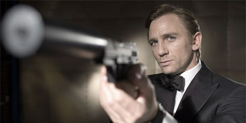
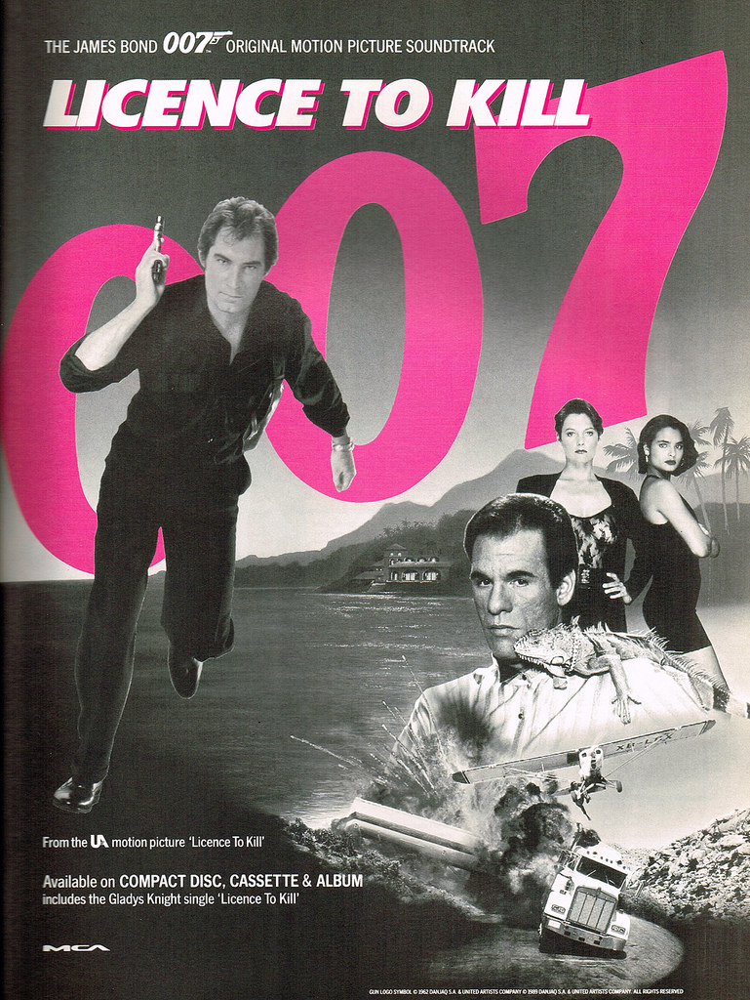
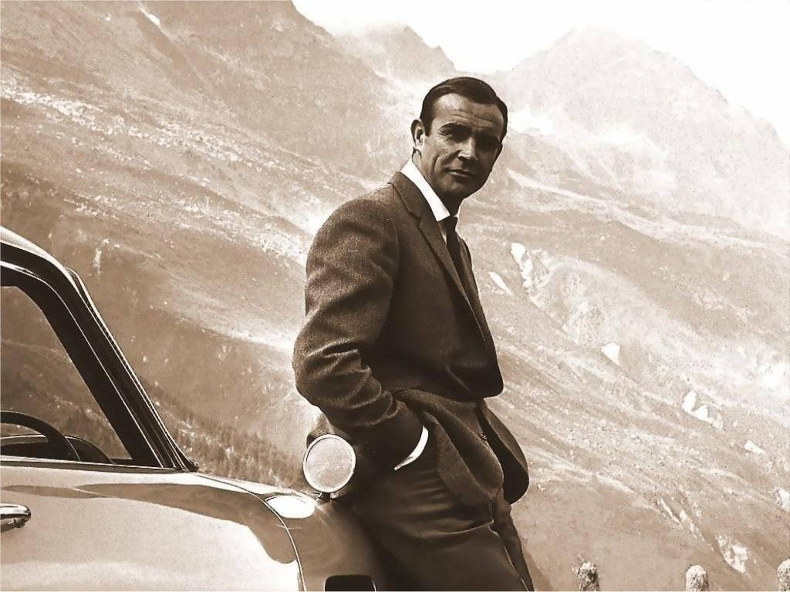
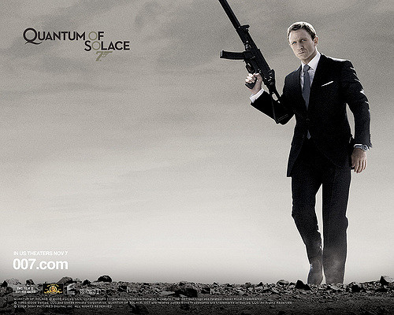
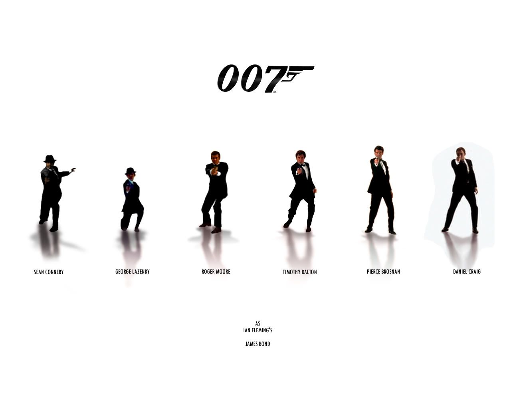
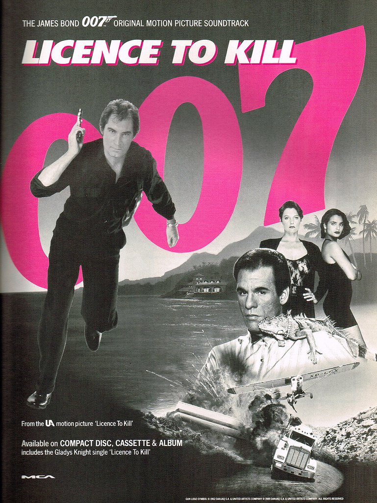
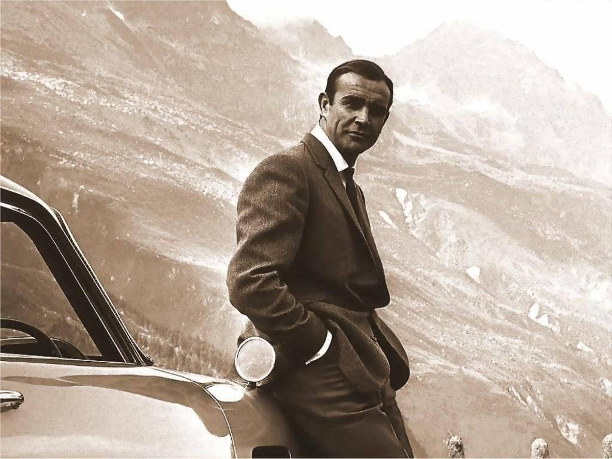
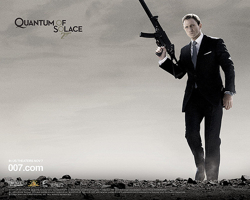
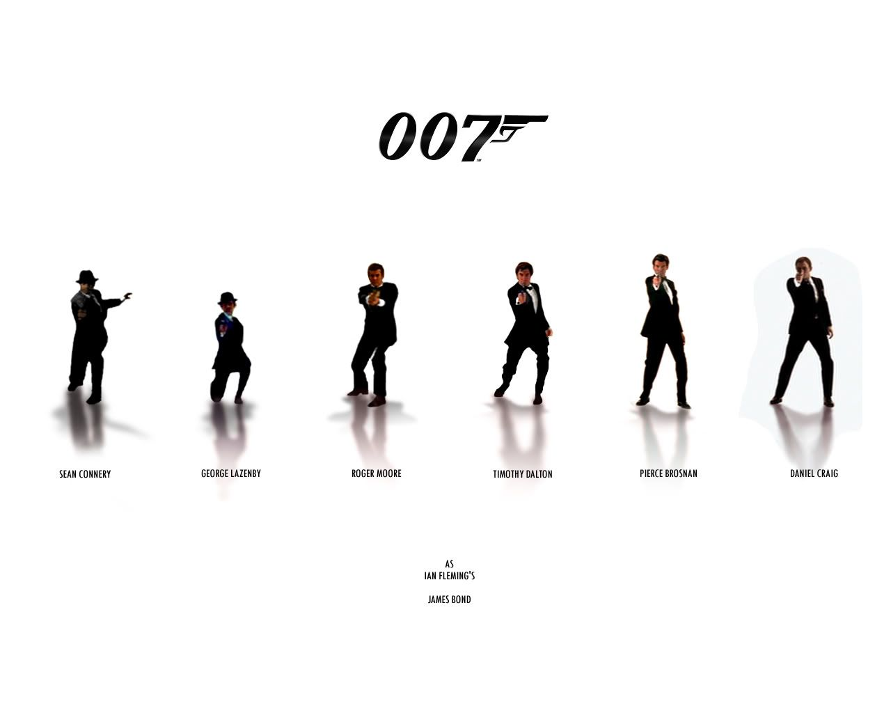

mug 007 super orginal
10€


James Bond, également connu par son matricule 007, est un personnage de fiction créé en 1953 par l'écrivain et ancien espion britannique Ian Fleming dans le roman Casino Royale.
- De 1953 à sa mort en 1964note 1, Ian Fleming publiera douze romans (dont un posthume) et neuf nouvelles regroupées en deux recueils (dont un posthume) avec le personnage de James Bond. Après la mort de Fleming, les aventures de Bond ont été successivement écrites par Kingsley Amis (sous le nom de Robert Markham), John Gardner, Raymond Benson, Charlie Higson, Sebastian Faulks, Jeffery Deaver, William Boyd, Steve Cole (en), puis Anthony Horowitz. Par ailleurs, John Pearson a écrit une biographie imaginaire de James Bond et, comme John Gardner et Raymond Benson, Christopher Wood a rédigé les novélisations de ses propres scénarios de films de James Bond. Ces romans ont été d'immenses succès internationaux, mais ce sont les nombreuses et régulières adaptations cinématographiques qui ont fait de James Bond, espion des services secrets britanniques et grand séducteur, un authentique mythe contemporain.
- Depuis 1962, 26 adaptations cinématographiques ont vu le jour, dont 24 pour la série de films d'EON Productions. James Bond y est incarné par différents acteurs, Sean Connery ayant été le premier d'entre eux, alors que Daniel Craig endosse ce rôle depuis 2006 et que Roger Moore a été celui qui a interprété le personnage le plus de fois dans les films produits par EON (7 films). La production de ces films, qui se poursuit encore aujourd'hui, constitue l'une des plus longues sagas de l'histoire du cinéma.
Note: The data-parent attribute makes sure that all collapsible elements under the specified parent will be closed when one of the collapsible item is shown. - James Bond 007 contre Dr.No (1962) - Bons baisers de Russie (1963) - Goldfinger (1964) - Opération Tonnerre (1965) - On ne vit que deux fois (1967) - Les diamants sont éternels (1971) - Jamais plus jamais (1983) - Casino Royale (1967) - Au service secret de Sa Majesté (1969) - Vivre et laisser mourir (1973) - L'Homme au pistolet d'or (1974) - L'Espion qui m'aimait (1977) - Moonraker (1979) - Rien que pour vos yeux (1981) - Octopussy (1983) - Dangereusement vôtre (1985) - Tuer n'est pas jouer (1987) - Permis de tuer (1989) - GoldenEye (1995) - Demain ne meurt jamais (1997) - Le monde ne suffit pas (1999) - Meurs un autre jour (2002) - Casino Royale (2006) - Quantum of Solace (2008 - Skyfall (2012) - Spectre (2015) James Bond 25 (annoncé)
Différents acteurs James Bond
Films de la série "EON"
Films Indépendants
Films Indépendants
Films de la série "EON"
Films de la série "EON"
Films de la série "EON"
Films de la série "EON"
Films de la série "EON"

 Français
2016-2017
53744
Français
2016-2017
53744
 Anglais
2015-2016
50302
Anglais
2015-2016
50302

Français
1992
8463

Français
1988
3985

This year, Bond In Motion at London Film Museum have installed a new display of original film cars driven by some of the female characters. Complemented by previously unseen costumes, props and storyboards, it is a celebration of the series’ memorable women and the cars they drove.
Tania Mallet playing Tilly Masterson in GOLDFINGER in 1964 became the first actress to drive a car in a Bond film. The Mustang she drove was a pre-production car acquired from Ford especially for the production. The exhibition contains an original production memo from January 1964 requesting driving lessons for Tania Mallet.
Cars new to Bond In Motion include the Land Rover Double Defender Cab used by Moneypenny (Naomie Harris) to pursue the mercenary Patrice (Ola Rapace) through the streets of Istanbul in SKYFALL (2012). Accompanying the car, other items from SKYFALL are Moneypenny’s costume, a storyboard by Jim Cornish depicting the sequence where Moneypenny chases the train whilst driving the Land Rover and a clapperboard signed by Daniel Craig, Sam Mendes, Naomie Harris, Bérénice Marlohe and Javier Bardem.
Also new to the exhibition is the Ford Thunderbird driven by Jinx (Halle Berry) in DIE ANOTHER DAY (2002). Jinx, posing as Miss Swift from Space & Technology magazine, arrives in style at Gustav Graves’ spectacular ice palace in Iceland in a coral Thunderbird — it is the 2003 model secured early by the 2002 production. The Thunderbird is joined by Jinx’s costume — Versace leather jacket and skirt, Gina leather stiletto boots — and additional props from the film.
The Ford KA, driven by Camille (Olga Kurylenko) in QUANTUM OF SOLACE, is also featured with one of her costumes created by Jasper Conran.
The exhibition has over 100 individual items on display including the Aston Martin DB5 from GOLDENEYE (1995), the ‘Wet Nellie’ Lotus Esprit S1 from THE SPY WHO LOVED ME (1977), the Rolls-Royce Phantom III from GOLDFINGER (1964), and the ‘Little Nellie’ Wallis WA-116 Autogyro from YOU ONLY LIVE TWICE (1967).
To celebrate the new exhibits, Bond In Motion is offering 2-for-1 tickets until the end of 2017 using the code GP001.
London Film Museum is located at 45 Wellington Street, Covent Garden and is open seven days a week. Tickets are available at the box office daily or in advance from www.londonfilmmuseum.com and www.ticketmaster.co.uk

The International Spy Museum in Washington, D.C. is currently hosting Exquisitely Evil: 50 Years of Bond Villains which is dedicated to Bond’s most memorable adversaries. The exhibition brings together over 110 artifacts from the films – from Goldfinger’s golf shoes to Max Zorin’s airship, Jaws’ teeth to Le Chiffre’s tuxedo and puts each of 007’s villains into the context of their time, showing how Dr. No was borne of the Cold War era while Silva or Dominic Greene have emerged from a time of environmental fears and cyberterrorism.
This 5,000 square-foot exhibition also explores how Bond’s adventures have impacted on the public perception of espionage, with real-life Intelligence Operatives recounting their own ‘Bond moment’.
For more information click here:
www.spymuseum.org
James Bond est le fils d'Andrew Bond, un Écossais originaire de Glen Coe, et de Monique Delacroix, une Suissesse (canton de Vaud). Leur nationalité est établie dans "Au service secret de Sa Majesté"". Fleming a accentué le côté écossais
de Bond après avoir apprécié le portrait à l'écran de James Bond par l'acteur écossais Sean Connery, tandis que le nom de la mère de Bond s'inspire d'une fiancée suisse de Fleming (Monique Panchaud de Bottens). Une aventure prévue, mais jamais écrite, de James Bond aurait présenté la mère de Bond comme Écossaise. Selon l'héraldiste Griffon Or, du Collège of Arms, dans Au service secret de Sa Majesté, la famille paternelle remonterait à Norman
Le Bond en 1180 dont la devise est Orbis non sufficit (du latin : « Le monde ne suffit pas »), ce qui donne des origines aristocratiques à James Bond (le patronyme Bond signifie fermier ou paysan). James Bond passe une bonne partie de ses jeunes années à l'étranger, ce qui lui permet de maîtriser parfaitement l'allemand et le français, grâce au travail de son père comme représentant à l'étranger de la firme britannique d'équipement
militaire Vickers. À onze ans, Bond perd ses deux parents dans un accident d'alpinisme dans le massif des Aiguilles Rouges, près de Chamonix-Mont-Blanc.
Après la mort de ses parents, il part vivre en Angleterre, à Pett Bottom, dans le Kent chez sa tante Charmian Bond qui achève son éducation. Vers ses 12 ans, il entre au Eton College, qu'il quitte au bout de deux semestres pour « mauvaise
conduite » avec une des femmes de ménage. Dans l'une des nouvelles de Bons baisers de Paris, il raconte cependant avoir perdu sa virginité lors de sa première visite à Paris à l'âge de 16 ans. Bond quitte Eton pour le collège de Fettes à Édimbourg en Écosse, l'ancienne école de son père où il se fait remarquer pour une aptitude à tous les sports, en particulier la boxe (poids léger). Selon John Pearson et une allusion de Fleming
dans Bons baisers de Russie, Bond a aussi étudié un temps à l'université de Genève. À l'exception de Fettes, la présence de Bond dans ces écoles s'établit de façon parallèle à la propre vie de Fleming. Le film On ne vit que deux fois affirme qu'il est diplômé en langues orientales à l'université de Cambridge. À un certain moment, il étudie aussi à l'Université d'Oxford pour apprendre le danois comme il est dit dans le film Demain ne
meurt jamais. Bond peut parler plusieurs langues, notamment l'allemand, le français, le russe et le japonais. Il existe de nombreuses contradictions dans les films et les romans sur les langues qu'il dit connaître.
En 1941, Bond ment sur son âge pour pouvoir entrer dans la Royal Naval Reserve pendant la Seconde Guerre mondiale, d'où il sort avec le grade de commander. Bond conserve son rang alors qu'il est employé dans les services secrets britanniques. Il est promu captain dans Gagner, perdre ou mourir de John Gardner mais est redevenu commander depuis les romans de Raymond Benson. Il est aussi devenu membre de la Royal Naval Volunteer Supplementary Reserve (RNVSR) constituée d'officiers
ayant une grande expérience du terrain.
Hormis dans la série La Jeunesse de James Bond, l'âge de Bond est rarement défini dans les films ou les livres ; il se situe approximativement dans la quarantaine. Beaucoup de biographes de Ian Fleming s'accordent à dire que celui-ci n'avait
jamais pensé écrire autant d'aventures de James Bond et qu'il a dû « bricoler » la vie de Bond et changer les dates pour s'assurer qu'il possédait l'âge approprié pour le service. Les acteurs qui ont incarné Bond à l'écran avaient des
âges variés : George Lazenby avait 29 ans dans Au service secret de Sa Majesté, tandis que Roger Moore avait 57 ans dans Dangereusement vôtre, son dernier James Bond. Dans sa biographie fictive sur l'agent secret, John Pearson donne à Bond la date de naissance du 11 novembre 1920, mais Fleming n'a jamais laissé entendre cela dans ses livres. Par contre, le roman On ne vit que deux fois fournit deux
indices indiquant que l'année de naissance serait 1924. Dans l'histoire, pensant que celui-ci est mort, M écrit sa nécrologie où il indique que Bond a quitté l'école à 17 ans pour rejoindre le ministère de la Défense en 1941 en se donnant
19 ans. Si Bond avait 17 ans en 1941, alors il serait né en 1924. De plus, Tiger Tanaka, le chef des services secrets japonais, dit que Bond est né l'année du Rat ce qui soutient la théorie de l'année 1924. Dans Solo, William Boyd donne aussi 1924 comme date de naissance à Bond. Cependant, dans Moonraker,
Fleming écrit que l'âge de Bond est 37 ans, ce qui signifierait probablement qu'il est né en 1918, lui en donnant 34 dans Casino Royale. Plus complexe, John Griswold dans son livre Ian Fleming's James Bond: Annotations and Chronologies
lui donne la date de naissance du 11 novembre 1921. Griswold note que l'entrée de Bond au Ministère de la Défense est à l'origine datée dans le manuscrit de Fleming de 1939 et plus tard déplacée en 1941. Griswold s'est un moment disputé
pour que Bond ait rejoint l'Amirauté en 1939 (la même année que pour Fleming) et que 1941 soit l'année repère de son recrutement dans une organisation plus tard rattachée au ministère de la Défense par Fleming. Griswold pense que de nombreux détails dans la chronologie de Bond prennent plus de sens avec l'année originale de 1939. Par exemple, ses parents étant morts quand il avait 11 ans, Bond avait donc 11 ans du premier janvier au 10 novembre
1933 si l'on admet qu'il est né en 1921. Dans Casino Royale, 1933 est mentionnée comme l'année où Bond a « acheté » sa première Bentley. Puisque toutes les années de naissance envisagées font que Bond était trop jeune pour acheter sa
Bentley, un scénario plus probable serait qu'il en aurait hérité au décès de son père. Griswold présenta son idée à Ian Fleming Publications en février 2003. La compagnie s'inspira de cette version pour la série La Jeunesse de James
Bond où Bond est un adolescent des années 1930 dont l'auteur, Charlie Higson, indique qu'il est né en 1920. Dans cette série, la Bentley en question est achetée par Bond en décembre 1933 dans Poker fatal, avec l'argent récolté en aidant
quelqu'un à gagner à la roulette. Auparavant, Bond avait hérité d'une Bamford & Martin Sidevalve Short Chassis Tourer de son oncle Max vers Pâques 1933. Tout comme son année de naissance, son lieu de naissance et sa fratrie sont controversés. Selon John Pearson, Bond est
né à Wattenscheid, une petite ville près d'Essen, en Allemagne, et a un frère ainé prénommé Henry. Charlie Higson déclare, lui, dans La Jeunesse de James Bond, que Bond est né en Suisse et fils unique.
Dans les films, l'époque où James Bond est devenu un agent 00 n'est jamais explicitement située jusqu'à Casino Royale (2006) où sa mise en service est éclairée, bien que des références dans James Bond contre Dr No laissent suggérer l'année
1952. Selon Fleming, après avoir joint le RNVSR, Bond aurait voyagé en Amérique, à Hong Kong et en Jamaïque. C'est à ce moment-là qu'il aurait rejoint une autre organisation comme le SOE, la branche 00 du Secret Intelligence Service
(MI6), ou serait même devenu commando dans le 30th Assault Unit. Bond a gagné ses galons dans la section 00 en accomplissant deux missions décrites dans Casino Royale. La première est l'assassinat d'un espion japonais au 36e étage du RCA Building du Rockefeller Center à New York. La seconde est l'assassinat d'un agent double norvégien qui avait trahi deux agents britanniques, et qu'il a poignardé dans
son lit, à Stockholm. Son matricule est toujours « 007 », sauf dans le roman On ne vit que deux fois où il devient temporairement « 7777 ». Selon James Bond: The Authorised Biography Of 007 de John Pearson, James Bond a été approché
par Maddox, un membre des services secrets britanniques, qui lui a révélé que sa petite amie était responsable d'une fuite de documents secrets. Après que Bond a proposé de s'en charger lui-même, et l'a tuée en s'écrasant volontairement dans le décor avec elle en voiture, Maddox l'a envoyé à Monte-Carlo où il a été chargé de s'occuper d'une bande de Roumains qui gagnaient sans
cesse dans un casino ; il approchait alors les 17 ans. La mission ayant été un succès, Bond fut assigné à la station P (Paris) des services secrets britanniques avant de voyager dans toute l'Europe comme contact. C'est à Berlin que James Bond a tué un homme « pour la première » fois. Il a alors accompli d'autres missions, dont celle du RCA Building et de Stockholm. En février 1946, il rencontre Sir Miles Messervy avant d’être affecté à l'Office
of Strategic Services, à Washington D.C. Après une histoire due à la femme d'un politicien, Bond en est renvoyé. Plus tard, Ian Fleming recommande Bond à M et, deux jours plus tard, M déjeune avec Bond et lui évoque le SMERSH ainsi qu'une
nouvelle section qu'il a créée pour faire face à celui-ci, la section 00. Il a alors proposé à Bond d'en faire partie, et celui-ci a accepté. Bond a dû gagner sa place en s'entraînant durant une formation intense de trois mois. Ses tests étant satisfaisants, il s'est alors vu attribuer le matricule 007 par M. Selon Bond, obtenir le numéro 00 n'est pas très dur tant que l'on
est préparé à tuer ; Pearson suggère que Bond a tué pour la première fois alors qu'il était adolescent. Dans les livres, Bond n'aime pas tuer et l'évite autant que possible, préférant oublier les occasions où il y a été contraint plutôt
que de se laisser ronger par le remords. En revanche, dans les films, il tue sans montrer le moindre remords, jusqu'à GoldenEye, où il semble troublé par la brutalité de sa profession. Bond éprouve aussi un profond dégoût pour ceux qui
tuent des personnes sans défense, en particulier si la victime est une femme. Il lui arrive d'abandonner son devoir pour venger la mort d'innocents, comme il l'a fait pour Felix Leiter et sa femme, assassinée dans le film Permis de tuer.
Dans les livres et les films, Bond a une attitude cavalière face à sa propre mort : lorsqu'il est capturé, il accepte son sort et espère que le MI6 reniera son existence dans une telle situation. Il montre à plusieurs reprises qu'il
sait parfaitement résister à la torture (notamment dans Casino Royale, Le monde ne suffit pas et Meurs un autre jour) sans jamais divulguer une seule information à ses tortionnaires. James Bond donne trois fois sa démission au cours des films : la première fois dans Au service secret de Sa Majesté pour un désaccord avec M qui voulait lui retirer l'affaire Bedlam concernant la traque de Blofeld et de l'organisation
SPECTRE. La deuxième fois dans Permis de tuer pour venger son ami de toujours Felix Leiter, dont la femme est assassinée par un grand trafiquant de drogue. Et enfin la troisième fois dans Casino Royale après être tombé amoureux de Vesper
Lynd. Dans Skyfall, Bond ne démissionne pas mais se met de fait en congé du service, avant de retourner à l'action, motivé par son sens du devoir. C'est également ce film qui ramène Bond sur les lieux de son enfance, et l'on peut y voir
la tombe de ses parents.
Quand il n'est pas en mission, Bond habite à Chelsea Square près de Kings Road, dans le quartier de Chelsea à Londres. Son appartement est entretenu par une vieille gouvernante écossaise nommée May Maxwell, qui est très loyale et maternelle
envers lui. Selon La Jeunesse de James Bond, May travaillait auparavant pour la tante de Bond. Ce dernier n'a presque jamais amené de femme chez lui, cela n'arrive qu'une fois dans les romans, entre Les Diamants sont éternels et Bons
baisers de Russie, lorsqu'il vit temporairement avec Tiffany Case. Ainsi qu'une fois dans les films, où, dans Vivre et laisser mourir, M et Miss Moneypenny viennent voir Bond à son appartement, ce qui l'oblige à cacher sa conquête du
moment dans sa penderie. Selon les livres de Pearson et une allusion dans Bons baisers de Russie, Tiffany s'est souvent disputé avec May et est finalement partie. Dans son appartement, Bond possède deux téléphones : un pour les appels
personnels et un téléphone rouge en ligne directe avec les services secrets, dont il est dit qu'il sonne toujours aux moments les plus inopportuns. Bond connaît de nombreuses conquêtes féminines, mais il s'agit pour la quasi-totalité d'amourettes ou d'aventures d'une nuit. Il s'agit des fameuses James Bond girls. Il entame une relation avec quasiment toutes les filles qu'il rencontre,
et les abandonne dès qu'elles deviennent un problème. Si son sexisme repousse certaines femmes au premier abord, il finit tout de même par leur faire de l'effet, comme Holly Goodhead dans Moonraker ou Wai Lin dans Demain ne meurt jamais. Dans les films plus récents, son attitude envers les femmes est plus douce, il respecte le nouveau M qui est une femme, et quelques femmes comme Elektra King ou Paris Carver réussissent à modifier un peu son attitude. Dans le film et le
livre Au service secret de Sa Majesté, James Bond tombe pourtant amoureux, et va jusqu'à se marier. Mais son épouse, Teresa « Tracy » di Vicenzo, est tuée le jour de leurs noces par Irma Bunt, « homme » de main de son ennemi juré, Ernst
Stavro Blofeld ; ce drame le poursuit plusieurs années. Dans les livres, Bond a sa revanche dans le roman suivant, On ne vit que deux fois, quand par chance il retrouve Blofeld au Japon, tandis que le Bond des films attrape Blofeld dans
Les diamants sont éternels avec un résultat ambigu. Plus tard, dans le pré-générique de Rien que pour vos yeux, Bond élimine Blofeld. Dans le livre On ne vit que deux fois, Bond a un enfant avec Kissy Suzuki qui s'appelle, selon le livre de Pearson, James Suzuki. Le fils de James Bond occupe
également une place importante dans l'intrigue de Le Spectre du passé de Raymond Benson, nouvelle dans laquelle James Suzuki meurt.
Bien qu'il ne soit pas un gourmet, Bond donne des instructions méticuleuses sur la préparation de ses repas et de ses boissons. Son repas préféré est le petit-déjeuner et il se délecte des œufs brouillés de sa gouvernante May. Il adore
le caviar mêlé à du jaune d'œuf, les soles meunières, les crabes noirs, le gratin de queues de langoustes, les quenelles de brochet et la viande tendre qui se coupe à la fourchette. Pour son « quatre heures », il commande souvent du
foie gras. James Bond prise également le café, mais déteste le thé, qu'il considère dans Goldfinger comme de la « boue », et l'une des principales raisons de la chute de l'Empire britanniquenote 4. Bond possède une connaissance impressionnante des alcools. Il apprécie les vins, notamment le Rothschild 1947 et le Piesporter Goldtropfchen 1953. Il est aussi un grand amateur de champagne comme le Taittinger, le Bollinger et le Dom Pérignon.
Dans Skyfall, Silva lui propose l'un de « ses péchés mignons » (sic), un whisky Macallan Fine and Rare Vintage de 1962, présenté comme un 50 ans d'âge, une référence discrète au 50e anniversaire du personnage de James Bond. Bond commande
toujours une « vodka-martini mélangée au shaker, pas à la cuillère » (« shaken, not stirred »). Dans le roman Moonraker, il boit sa vodka d'un seul coup, servie avec une pincée de poivre noir ; une habitude prise lorsqu'il travaillait dans la région baltique. Il explique que ce n'est pas pour le goût mais parce que cela entraîne
les impuretés des vodkas bon marché au fond du verre. En Floride, il préfère déguster un double « Old Grandad » servi sec (sans glaçon). Il aime aussi le Classic Dry martini et le bourbon. Au cours de ses aventures, Bond aurait consommé
317 boissons, dont 101 verres de whisky, 35 sakés, 30 coupes de champagne et seulement 19 vodka-martinis, soit une moyenne d'une boisson toutes les sept pages3. Un groupe de médecins britanniques, cumulant les quatorze romans, estime
qu'il a une consommation quotidienne maximale de 49,8 unités d'alcool et une consommation totale de 1 150 unités d'alcool, soit 92 unités en moyenne par semaine, ce qui en fait un alcoolique invétéré, état incompatible avec la description
de ses prouesses physiques et même sexuelles4. Toutefois, son dossier au KGB indique "la boisson mais sans excès". Bond combine occasionnellement sa consommation d'alcool avec celle de drogues : dans Moonraker il accompagne son champagne avec de la benzédrine (amphétamine) avant son jeu de cartes avec Hugo Drax. Il l'utilise également pour se stimuler
en mission, notamment lorsqu'il nage dans Vivre et laisser mourir, ou pour rester éveillé et en alerte comme dans Motel 007. Dans les romans de Fleming, Bond est un gros fumeur. En moyenne, il grille quotidiennement une soixantaine de
cigarettes, bien que dans certains livres, il essaie de freiner sa consommation afin de pouvoir accomplir certains exercices physiques comme nager sous l'eau. Il est aussi forcé de la réduire après avoir été envoyé dans un centre de
remise en forme par son supérieur dans Opération Tonnerre. Les cigarettes favorites de Bond sont les Morland Specials, fabriquées avec un tabac macédonien et avec un contenu plus élevé que la moyenne en goudron de Morlands of Grosvenor Street. La cigarette elle-même porte trois bandes dorées sur
le filtre, tout comme le rang de commander de Bond. À partir des romans de John Gardner, Bond passe à des cigarettes avec un taux allégé en goudron issu de Morlands et plus tard de H. Simmons of Burlington Arcade. Dans les films, Bond
fume par intervalles, selon les humeurs de la société. Dans les films avec Connery, Lazenby et Dalton, Bond est un fumeur alors que les James Bond de Moore et de Brosnan ne touchent jamais à la cigarette, bien qu'ils ne dédaignent pas
occasionnellement un cigare. Dans Demain ne meurt jamais, Brosnan fait la remarque à un terroriste qui fume (vraisemblablement un joint, vu la forme de sa cigarette roulée) que c'est une « répugnante habitude ». La dernière fois que Bond est vu avec une cigarette à l'écran remonte à 1989 dans Permis de tuer, jusqu'à 2002 dans Meurs un autre jour où il se rend à Cuba et qu'il fume des delectados. Malgré le penchant de Bond à vivre dans le luxe,
son salaire est établi à 4 200 USD par mois dans le roman Goldfinger (1959), soit 35 723,61 USD de 2017.
Daniel Craig à Venise, lors du tournage de Casino Royale.
Le film Casino Royale de 2006 est une réinitialisation de la série qui raconte la première mission de Bond en tant qu'agent double zéro. Le site officiel du film donne une biographie détaillée de Bond parallèle à celle du personnage de Ian Fleming. Bond est né le 13 avril 1968 (13 avril étant le jour où Casino Royale fut publié en 1953 et 1968 l'année de naissance de Daniel Craig). Ses parents, Andrew et Monique Bond, meurent dans un accident d'escalade, après quoi il est élevé par sa tante Charmain dans le Kent en Angleterre.
Comme le personnage original, Bond est renvoyé du Eton College et rejoint le collège Fettes où son père a étudié. Il suit des cours à l'université de Genève durant son passage à Fettes dans le cadre d'un programme d’échange étudiant. Après Fettes, il rejoint la Royal Navy et entre au Britannia Royal Naval College à l'âge de 17 ans.
Le service militaire de Bond est mieux documenté : il rejoint le Special Boat Service de la Royal Navy, où il obtient le rang de Commander, puis il est placé dans le 030 Special Forces Unit. Bond est secrètement actif en Irak, en Somalie, en Iran, en Libye et ouvertement en Bosnie. Il est ensuite recruté par le RNR Defense Intelligence Group. Bond suit un parcours spécialisé dans les universités de Cambridge et d'Oxford à ce moment-là, décrochant un diplôme de langues orientales à Cambridge. Lorsqu'il rejoint le MI6, Bond est noté comme parlant couramment l'anglais, le français, l'allemand et l'italien, et pouvant aussi parler le grec, l'espagnol, le chinois et le japonais. Au cours de sa formation, il reçoit des notes exceptionnelles en endurance physique, en logique et en Psychological Ops exercises. De 17 à 31 ans, il sert la Royal Navy, rejoint le MI6 à 32 ans et est promu agent 00 à 38 ans en 2006.
 



Previous
Next




Previous
Next